Chapter 9 Advanced Plotting Techniques
9.1 Chapter Overview
Building on the fundamentals, this chapter explores advanced visualization techniques for sophisticated sport analytics. You’ll learn to create publication-quality plots with complex annotations, multiple panels, heatmaps, and specialized geoms.
Learning Objectives:
By the end of this chapter, you will be able to:
- Create smooth density plots for distribution comparison
- Add intelligent text labels with
geom_text_repel() - Annotate plots with shapes, arrows, and custom text
- Build heatmaps for correlation and performance matrices
- Create 2D density plots for large datasets
- Visualize geographic data with maps
- Combine multiple plots into complex panels
- Add statistical reference regions
- Master advanced customization techniques
- Use AI to create complex multi-layer visualizations
Key Concepts:
- Density estimation
- Label repulsion algorithms
- Annotation layers
- Tile plots and heatmaps
- Hexagonal binning
- Multi-panel composition
- Geographic visualization
9.2 Sample Data
Let’s create rich sport analytics data for this chapter:
# Player performance data
set.seed(456)
players <- data.frame(
player_id = 1:50,
player = paste0(
sample(c("Smith", "Johnson", "Williams", "Brown", "Jones", "Garcia",
"Miller", "Davis", "Rodriguez", "Martinez"), 50, replace = TRUE),
", ",
sample(c("J", "M", "R", "T", "K", "D", "C", "A"), 50, replace = TRUE),
"."
),
position = sample(c("Guard", "Forward", "Center"), 50, replace = TRUE,
prob = c(0.4, 0.4, 0.2)),
points_per_game = round(rnorm(50, mean = 18, sd = 6), 1),
rebounds_per_game = round(rnorm(50, mean = 7, sd = 3), 1),
assists_per_game = round(rnorm(50, mean = 4, sd = 2.5), 1),
minutes_per_game = round(rnorm(50, mean = 28, sd = 8), 1),
field_goal_pct = round(runif(50, 0.35, 0.55), 3),
salary_millions = round(exp(rnorm(50, mean = 1.5, sd = 0.8)), 2)
)
# Ensure realistic relationships
players <- players %>%
mutate(
points_per_game = pmax(5, pmin(35, points_per_game)),
rebounds_per_game = pmax(2, pmin(15, rebounds_per_game)),
assists_per_game = pmax(0.5, pmin(12, assists_per_game)),
minutes_per_game = pmax(10, pmin(40, minutes_per_game)),
# Salary somewhat related to performance
salary_millions = salary_millions * (1 + points_per_game / 100)
)
head(players, 10)## player_id player position points_per_game rebounds_per_game assists_per_game minutes_per_game
## 1 1 Jones, M. Center 14.0 6.5 6.3 21.2
## 2 2 Williams, J. Guard 26.2 11.1 7.1 19.5
## 3 3 Garcia, K. Forward 26.5 11.0 5.8 34.2
## 4 4 Jones, D. Guard 13.6 3.5 2.8 21.2
## 5 5 Rodriguez, T. Forward 17.5 9.2 7.1 13.3
## 6 6 Martinez, R. Center 22.9 11.6 3.5 36.1
## 7 7 Rodriguez, C. Forward 21.0 2.6 1.3 31.4
## 8 8 Martinez, J. Center 24.7 10.6 4.7 19.8
## 9 9 Williams, J. Guard 17.0 4.3 2.8 33.5
## 10 10 Miller, D. Forward 18.7 10.6 4.7 26.0
## field_goal_pct salary_millions
## 1 0.499 10.96680
## 2 0.519 6.31000
## 3 0.509 10.28445
## 4 0.518 21.51584
## 5 0.464 5.06425
## 6 0.526 4.21547
## 7 0.393 8.91770
## 8 0.473 4.56402
## 9 0.477 14.80050
## 10 0.511 6.01809# Team statistics data for heatmap
teams <- data.frame(
team = paste("Team", LETTERS[1:12]),
wins = c(28, 22, 31, 18, 25, 29, 20, 26, 23, 30, 19, 27),
points_per_game = c(105, 98, 110, 92, 102, 108, 95, 103, 99, 109, 94, 104),
rebounds_per_game = c(45, 42, 47, 40, 44, 46, 41, 45, 43, 48, 39, 44),
assists_per_game = c(24, 21, 26, 19, 23, 25, 20, 24, 22, 27, 18, 23),
turnovers_per_game = c(13, 15, 12, 16, 14, 13, 15, 13, 14, 12, 17, 14),
region = sample(c("East", "West"), 12, replace = TRUE)
)9.3 Density Plots: Smooth Distributions
Density plots show the distribution of data as a smooth curve, estimated from the data.
9.3.1 When to Use Density Plots
- Comparing multiple distributions smoothly
- When histograms look too choppy
- Showing overlapping distributions
- Emphasizing the shape over exact counts
9.3.2 Basic Density Plot
# Single distribution
ggplot(players, aes(x = points_per_game)) +
geom_density(fill = "steelblue", alpha = 0.6) +
labs(title = "Distribution of Points per Game",
x = "Points per Game",
y = "Density") +
theme_minimal()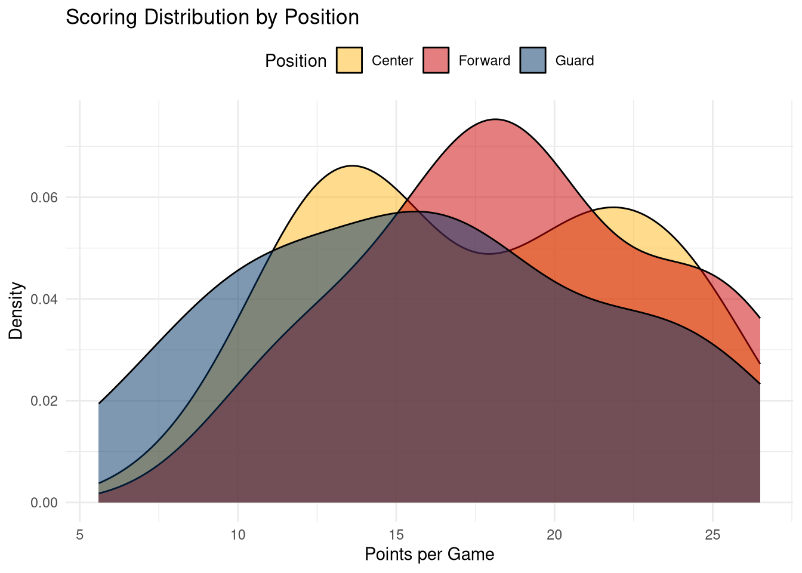
9.3.3 Comparing Multiple Distributions
# Density by position
ggplot(players, aes(x = points_per_game, fill = position)) +
geom_density(alpha = 0.5) +
scale_fill_manual(values = c("Guard" = "#003366",
"Forward" = "#CC0000",
"Center" = "#FFB81C")) +
labs(title = "Scoring Distribution by Position",
x = "Points per Game",
y = "Density",
fill = "Position") +
theme_minimal() +
theme(legend.position = "top")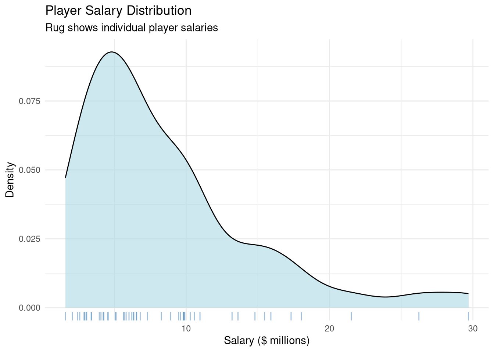
9.3.4 Density with Rug Plot
# Add rug to show individual data points
ggplot(players, aes(x = salary_millions)) +
geom_density(fill = "lightblue", alpha = 0.6) +
geom_rug(alpha = 0.5, color = "steelblue") +
labs(title = "Player Salary Distribution",
subtitle = "Rug shows individual player salaries",
x = "Salary ($ millions)",
y = "Density") +
theme_minimal()
9.3.5 Stacked Density (Ridgeline) Plots
# Using ggridges package for better position comparison
# install.packages("ggridges")
library(ggridges)
ggplot(players, aes(x = points_per_game, y = position, fill = position)) +
geom_density_ridges(alpha = 0.7) +
scale_fill_manual(values = c("Guard" = "#003366",
"Forward" = "#CC0000",
"Center" = "#FFB81C")) +
labs(title = "Scoring Distribution by Position (Ridgeline)",
x = "Points per Game",
y = "Position") +
theme_minimal() +
theme(legend.position = "none")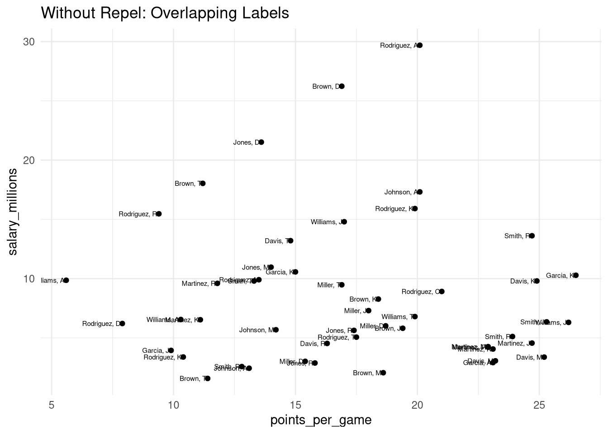
9.4 Text Labels with geom_text_repel()
geom_text_repel() intelligently positions text labels to avoid overlaps.
9.4.1 Why Use geom_text_repel?
Standard geom_text() often creates overlapping labels. geom_text_repel() from the ggrepel package automatically adjusts positions.
9.4.2 Basic Text Labels
# Regular geom_text (overlapping)
ggplot(players, aes(x = points_per_game, y = salary_millions)) +
geom_point() +
geom_text(aes(label = player), size = 2, hjust = 1) +
labs(title = "Without Repel: Overlapping Labels") +
theme_minimal()
9.4.3 Repelled Text Labels
# geom_text_repel (intelligent positioning)
ggplot(players, aes(x = points_per_game, y = salary_millions)) +
geom_point(size = 2, alpha = 0.6) +
geom_text_repel(aes(label = player), size = 2.5, max.overlaps = 20) +
labs(title = "With Repel: Clean, Readable Labels",
x = "Points per Game",
y = "Salary ($ millions)") +
theme_minimal()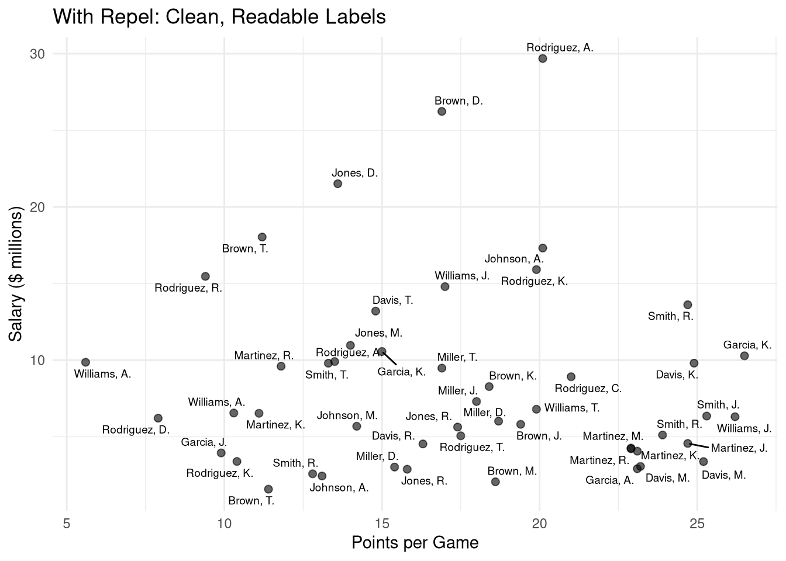
9.4.4 Selective Labeling
# Label only top performers
top_scorers <- players %>%
filter(points_per_game > quantile(points_per_game, 0.75))
ggplot(players, aes(x = points_per_game, y = salary_millions)) +
geom_point(aes(color = position), size = 3, alpha = 0.7) +
geom_text_repel(
data = top_scorers,
aes(label = player),
size = 3.5,
fontface = "bold",
box.padding = 0.5,
point.padding = 0.3,
segment.color = "gray50"
) +
scale_color_manual(values = c("Guard" = "#003366",
"Forward" = "#CC0000",
"Center" = "#FFB81C")) +
labs(title = "Top Scorers Highlighted",
subtitle = "Players in top 25% of scoring labeled",
x = "Points per Game",
y = "Salary ($ millions)",
color = "Position") +
theme_minimal()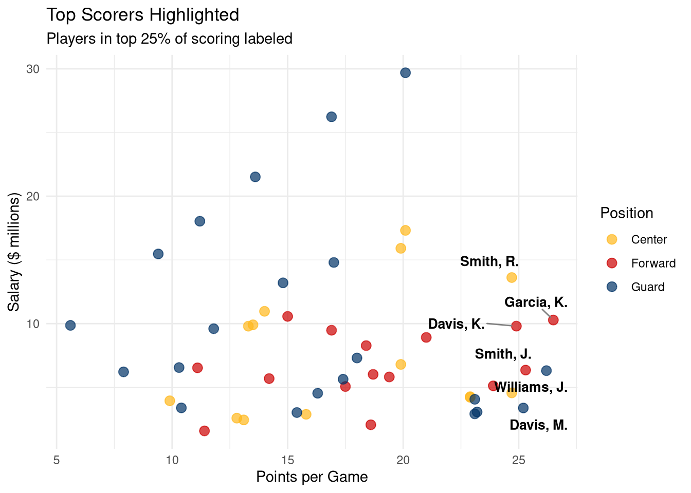
9.4.5 Customizing Repel Behavior
# Fine-tune repulsion
outliers <- players %>%
filter(salary_millions > 10 | points_per_game > 28)
ggplot(players, aes(x = points_per_game, y = salary_millions)) +
geom_point(size = 2, color = "gray60") +
geom_point(data = outliers, size = 4, color = "red") +
geom_text_repel(
data = outliers,
aes(label = player),
size = 4,
fontface = "bold",
box.padding = 1,
point.padding = 0.5,
force = 2,
arrow = arrow(length = unit(0.01, "npc")),
segment.color = "red",
segment.size = 0.5
) +
labs(title = "High Performers and High Earners",
x = "Points per Game",
y = "Salary ($ millions)") +
theme_minimal()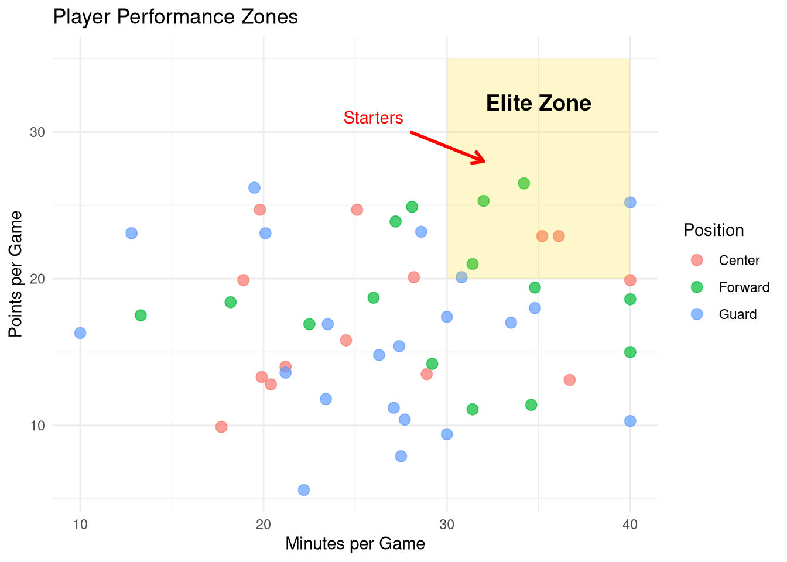
9.5 Annotations: Adding Context
Annotations add explanatory elements to plots without mapping to data.
9.5.1 annotate() Function
# Basic annotations
ggplot(players, aes(x = minutes_per_game, y = points_per_game)) +
geom_point(aes(color = position), size = 3, alpha = 0.7) +
# Add rectangle
annotate("rect", xmin = 30, xmax = 40, ymin = 20, ymax = 35,
alpha = 0.2, fill = "gold") +
# Add text
annotate("text", x = 35, y = 32, label = "Elite Zone",
fontface = "bold", size = 5) +
# Add arrow
annotate("segment", x = 28, y = 30, xend = 32, yend = 28,
arrow = arrow(length = unit(0.3, "cm")), size = 1, color = "red") +
annotate("text", x = 26, y = 31, label = "Starters", color = "red") +
labs(title = "Player Performance Zones",
x = "Minutes per Game",
y = "Points per Game",
color = "Position") +
theme_minimal()
9.5.2 Statistical Reference Lines
# Add mean and median lines
avg_points <- mean(players$points_per_game)
med_points <- median(players$points_per_game)
avg_rebounds <- mean(players$rebounds_per_game)
med_rebounds <- median(players$rebounds_per_game)
ggplot(players, aes(x = rebounds_per_game, y = points_per_game)) +
geom_point(aes(size = salary_millions, color = position), alpha = 0.6) +
# Quadrant lines
geom_vline(xintercept = avg_rebounds, linetype = "dashed",
color = "gray40", size = 1) +
geom_hline(yintercept = avg_points, linetype = "dashed",
color = "gray40", size = 1) +
# Quadrant labels
annotate("text", x = 12, y = 32, label = "High Scoring\nHigh Rebounding",
color = "darkgreen", fontface = "bold", size = 4) +
annotate("text", x = 3, y = 32, label = "High Scoring\nLow Rebounding",
color = "orange", fontface = "bold", size = 4) +
annotate("text", x = 12, y = 8, label = "Low Scoring\nHigh Rebounding",
color = "blue", fontface = "bold", size = 4) +
annotate("text", x = 3, y = 8, label = "Low Scoring\nLow Rebounding",
color = "red", fontface = "bold", size = 4) +
scale_size_continuous(range = c(2, 10), name = "Salary\n($ millions)") +
labs(title = "Player Performance Quadrants",
subtitle = "Dashed lines = league averages",
x = "Rebounds per Game",
y = "Points per Game",
color = "Position") +
theme_minimal()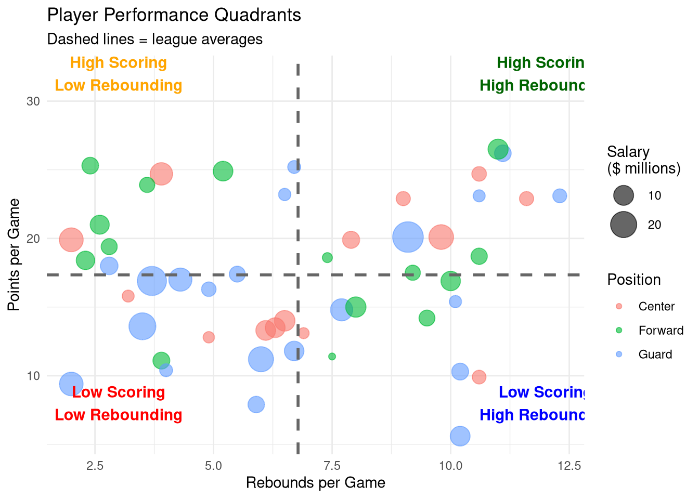
9.5.3 Shaded Regions
# Add confidence/target regions
ggplot(players, aes(x = field_goal_pct, y = points_per_game)) +
# Target region
annotate("rect", xmin = 0.45, xmax = 0.55, ymin = 18, ymax = 35,
fill = "lightgreen", alpha = 0.2) +
annotate("text", x = 0.50, y = 33, label = "Elite\nEfficiency",
fontface = "bold", color = "darkgreen") +
geom_point(aes(color = position), size = 4, alpha = 0.7) +
scale_x_continuous(labels = scales::percent) +
labs(title = "Scoring Efficiency Analysis",
subtitle = "Green region = high scoring + high efficiency",
x = "Field Goal Percentage",
y = "Points per Game",
color = "Position") +
theme_minimal()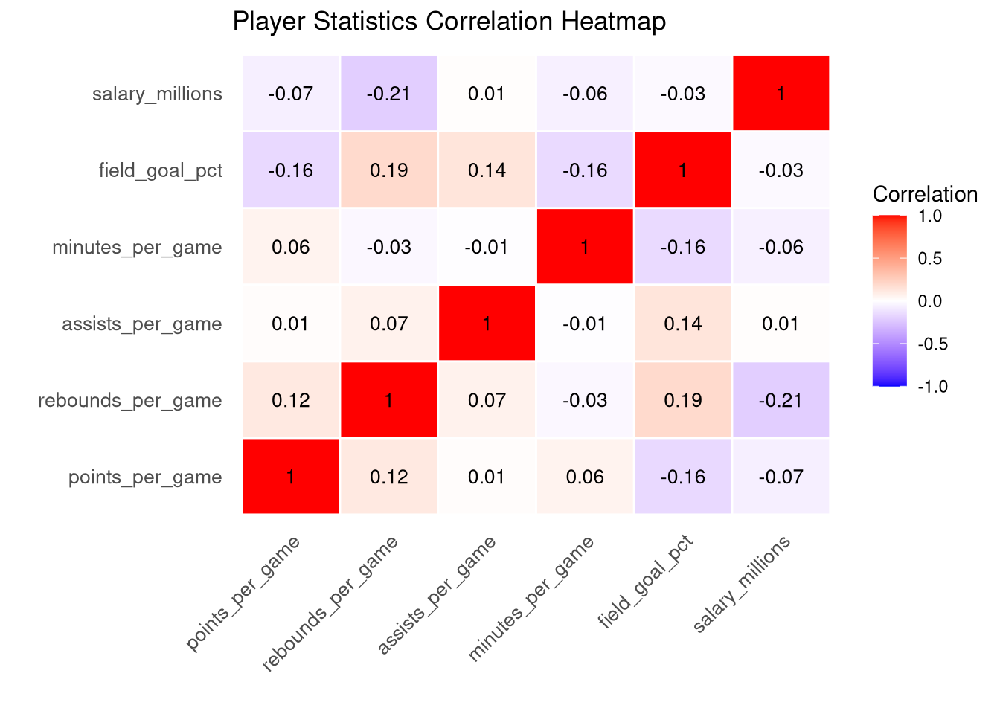
9.6 Heatmaps: Matrix Visualization
Heatmaps display data in a matrix format with colors representing values.
9.6.1 Correlation Heatmap
# Calculate correlation matrix
player_stats <- players %>%
dplyr::select(points_per_game, rebounds_per_game, assists_per_game,
minutes_per_game, field_goal_pct, salary_millions)
cor_matrix <- cor(player_stats)
# Reshape for ggplot
cor_melted <- reshape2::melt(cor_matrix)
# Create heatmap
ggplot(cor_melted, aes(x = Var1, y = Var2, fill = value)) +
geom_tile(color = "white", size = 0.5) +
geom_text(aes(label = round(value, 2)), color = "black", size = 3.5) +
scale_fill_gradient2(
low = "blue", high = "red", mid = "white",
midpoint = 0, limit = c(-1, 1),
name = "Correlation"
) +
labs(title = "Player Statistics Correlation Heatmap",
x = "", y = "") +
theme_minimal() +
theme(
axis.text.x = element_text(angle = 45, hjust = 1, size = 10),
axis.text.y = element_text(size = 10),
panel.grid = element_blank()
)
9.6.2 Team Performance Heatmap
# Normalize team stats for comparison
team_normalized <- teams %>%
mutate(across(c(wins, points_per_game, rebounds_per_game,
assists_per_game, turnovers_per_game),
~scale(.)[,1],
.names = "{.col}_norm"))
# Reshape for heatmap
team_long <- team_normalized %>%
dplyr::select(team, ends_with("_norm")) %>%
pivot_longer(cols = -team, names_to = "metric", values_to = "value") %>%
mutate(metric = gsub("_norm", "", metric))
# Create heatmap
ggplot(team_long, aes(x = metric, y = team, fill = value)) +
geom_tile(color = "white") +
scale_fill_gradient2(
low = "#CC0000", high = "#003366", mid = "white",
midpoint = 0,
name = "Std.\nDeviations"
) +
labs(title = "Team Performance Heatmap",
subtitle = "Blue = above average, Red = below average",
x = "Metric", y = "Team") +
theme_minimal() +
theme(
axis.text.x = element_text(angle = 45, hjust = 1),
panel.grid = element_blank()
)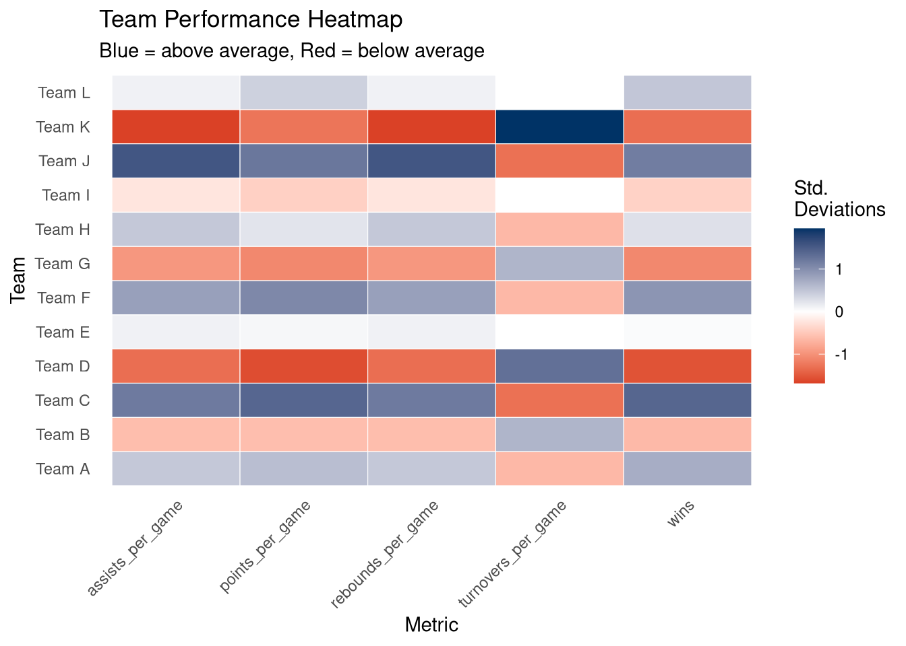
9.7 2D Density and Hexagonal Binning
For large datasets, 2D density plots and hexagonal binning avoid overplotting.
9.7.1 2D Density Contours
# Generate large dataset
set.seed(789)
large_dataset <- data.frame(
shots_attempted = rnorm(500, mean = 15, sd = 4),
points_scored = rnorm(500, mean = 18, sd = 6)
)
# 2D density contours
ggplot(large_dataset, aes(x = shots_attempted, y = points_scored)) +
geom_density_2d(color = "steelblue", size = 1) +
geom_point(alpha = 0.2, size = 1) +
labs(title = "2D Density Contours",
subtitle = "Shows concentration of observations",
x = "Shots Attempted",
y = "Points Scored") +
theme_minimal()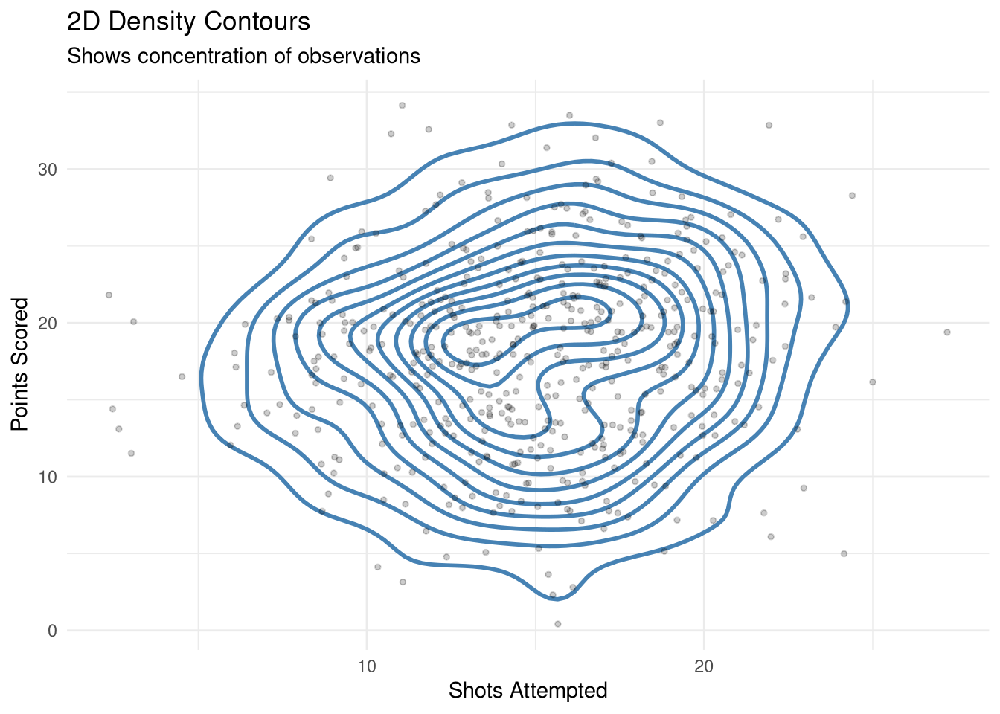
9.7.2 Filled 2D Density
# Filled contours
ggplot(large_dataset, aes(x = shots_attempted, y = points_scored)) +
stat_density_2d(aes(fill = after_stat(level)), geom = "polygon", alpha = 0.7) +
scale_fill_viridis_c(option = "plasma") +
geom_point(alpha = 0.1, size = 0.5) +
labs(title = "Filled 2D Density Plot",
x = "Shots Attempted",
y = "Points Scored",
fill = "Density") +
theme_minimal()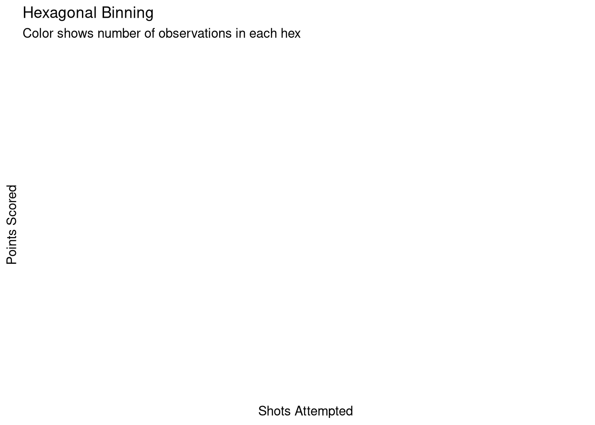
9.7.3 Hexagonal Binning
# Hexagonal bins
ggplot(large_dataset, aes(x = shots_attempted, y = points_scored)) +
geom_hex(bins = 20) +
scale_fill_viridis_c(option = "inferno", name = "Count") +
labs(title = "Hexagonal Binning",
subtitle = "Color shows number of observations in each hex",
x = "Shots Attempted",
y = "Points Scored") +
theme_minimal()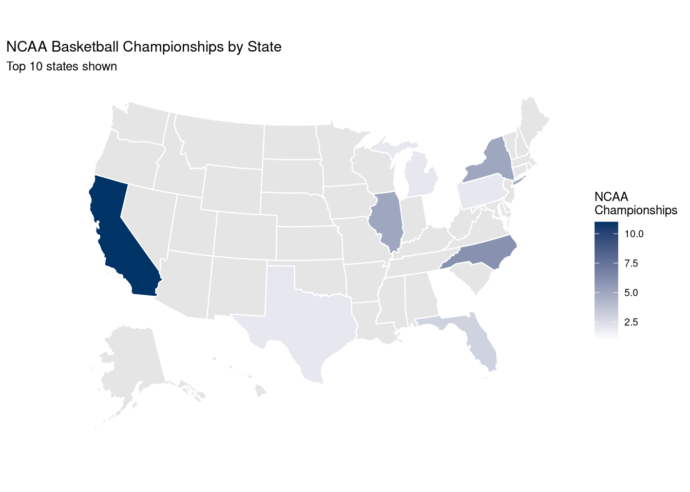
9.8 Map Visualizations
Visualize geographic data with maps.
9.8.1 US State Map
# State-level data (college basketball example)
state_data <- data.frame(
state = c("FL", "TX", "CA", "NY", "NC", "OH", "IL", "PA", "MI", "GA"),
championships = c(3, 2, 11, 5, 6, 1, 5, 2, 2, 1),
stringsAsFactors = FALSE
)
# Create map
library(usmap)
plot_usmap(data = state_data, values = "championships", color = "white") +
scale_fill_continuous(
low = "white", high = "#003366",
name = "NCAA\nChampionships",
na.value = "gray90"
) +
labs(title = "NCAA Basketball Championships by State",
subtitle = "Top 10 states shown") +
theme(legend.position = "right")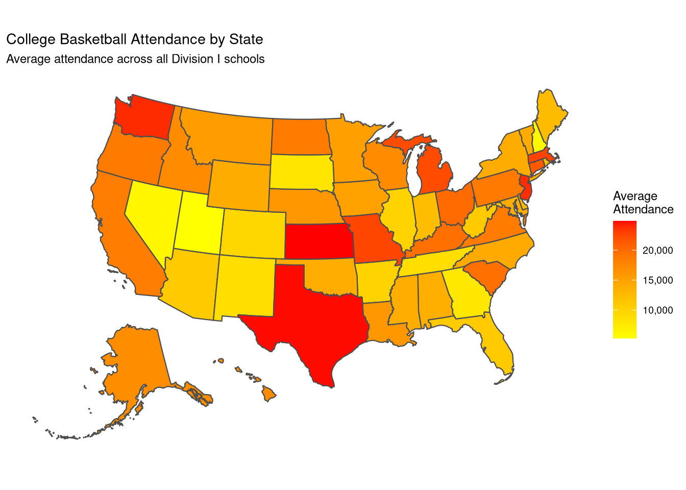
9.8.2 Regional Comparison
# Conference map example
conference_data <- data.frame(
state = state.abb,
avg_attendance = sample(5000:25000, 50, replace = TRUE)
)
plot_usmap(data = conference_data, values = "avg_attendance",
color = "gray30", size = 0.3) +
scale_fill_gradient(
low = "yellow", high = "red",
name = "Average\nAttendance",
labels = scales::comma
) +
labs(title = "College Basketball Attendance by State",
subtitle = "Average attendance across all Division I schools") +
theme(legend.position = "right")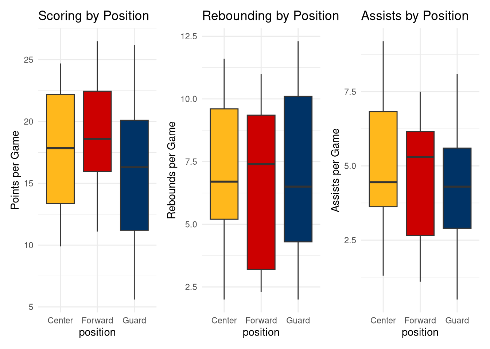
9.9 Multi-Panel Plots with Patchwork
patchwork makes it easy to combine multiple plots.
9.9.1 Side-by-Side Plots
# Create individual plots
p1 <- ggplot(players, aes(x = position, y = points_per_game, fill = position)) +
geom_boxplot() +
scale_fill_manual(values = c("Guard" = "#003366",
"Forward" = "#CC0000",
"Center" = "#FFB81C")) +
labs(title = "Scoring by Position", y = "Points per Game") +
theme_minimal() +
theme(legend.position = "none")
p2 <- ggplot(players, aes(x = position, y = rebounds_per_game, fill = position)) +
geom_boxplot() +
scale_fill_manual(values = c("Guard" = "#003366",
"Forward" = "#CC0000",
"Center" = "#FFB81C")) +
labs(title = "Rebounding by Position", y = "Rebounds per Game") +
theme_minimal() +
theme(legend.position = "none")
p3 <- ggplot(players, aes(x = position, y = assists_per_game, fill = position)) +
geom_boxplot() +
scale_fill_manual(values = c("Guard" = "#003366",
"Forward" = "#CC0000",
"Center" = "#FFB81C")) +
labs(title = "Assists by Position", y = "Assists per Game") +
theme_minimal() +
theme(legend.position = "none")
# Combine with patchwork
library(patchwork)
p1 + p2 + p3
9.9.2 Complex Layouts
# Create scatter plot
p4 <- ggplot(players, aes(x = points_per_game, y = salary_millions,
color = position)) +
geom_point(size = 3, alpha = 0.7) +
geom_smooth(method = "lm", se = FALSE) +
scale_color_manual(values = c("Guard" = "#003366",
"Forward" = "#CC0000",
"Center" = "#FFB81C")) +
labs(title = "Salary vs. Performance",
x = "Points per Game",
y = "Salary ($ millions)") +
theme_minimal()
# Custom layout: 2x2 with one plot spanning two columns
(p1 | p2) / (p4)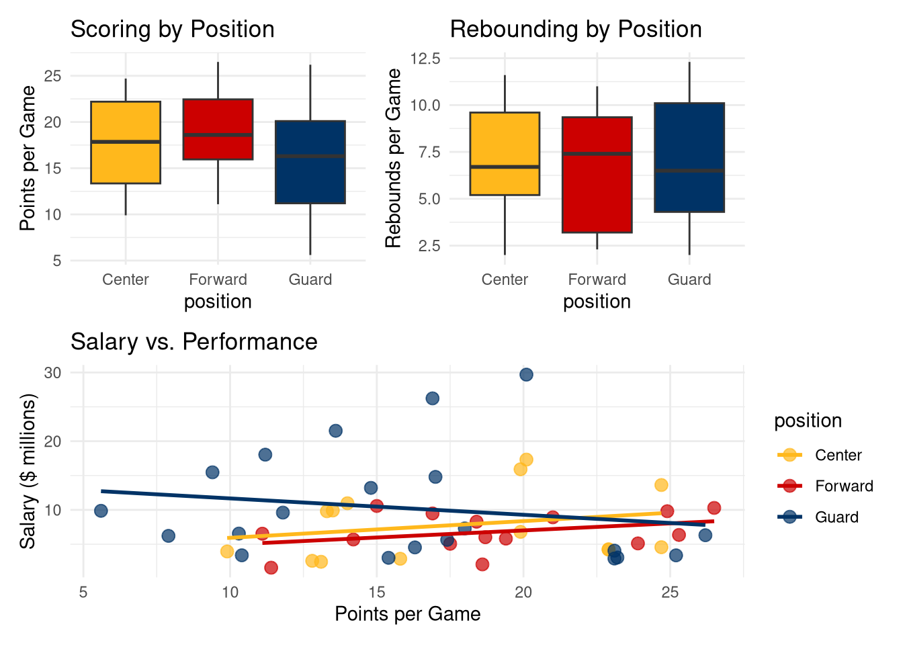
9.9.3 Adding Annotations to Composition
# With overall title
combined <- (p1 | p2 | p3) /
p4 +
plot_annotation(
title = "Player Performance Analysis by Position",
subtitle = "Data from 2024-2025 Season",
caption = "Source: League Statistics Database",
theme = theme(plot.title = element_text(size = 16, face = "bold"))
)
combined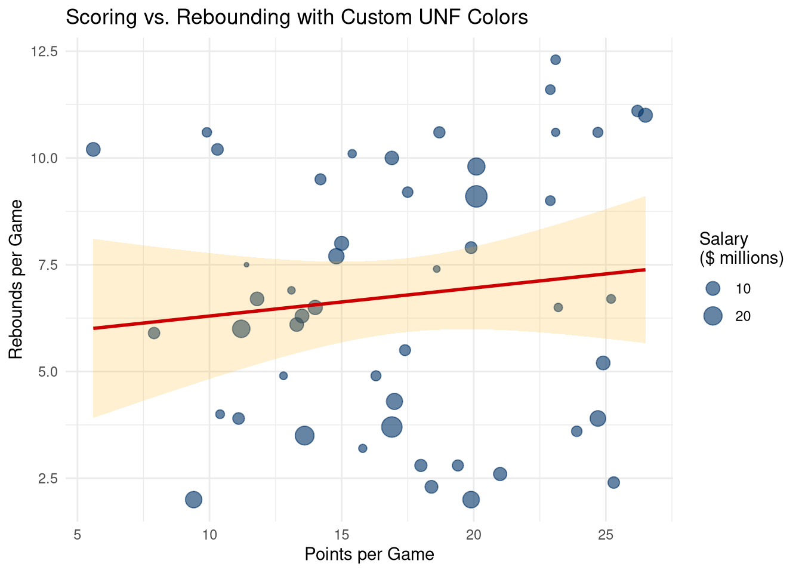
9.10 Advanced Customization
9.10.1 Custom Color Palettes
# Define custom team palette
unf_palette <- c(
primary = "#003366",
secondary = "#CC0000",
accent = "#FFB81C",
neutral = "#808080"
)
# Use in plot
ggplot(players, aes(x = points_per_game, y = rebounds_per_game)) +
geom_point(aes(size = salary_millions), color = unf_palette["primary"],
alpha = 0.6) +
geom_smooth(method = "lm", color = unf_palette["secondary"],
fill = unf_palette["accent"], alpha = 0.2) +
labs(title = "Scoring vs. Rebounding with Custom UNF Colors",
x = "Points per Game",
y = "Rebounds per Game",
size = "Salary\n($ millions)") +
theme_minimal()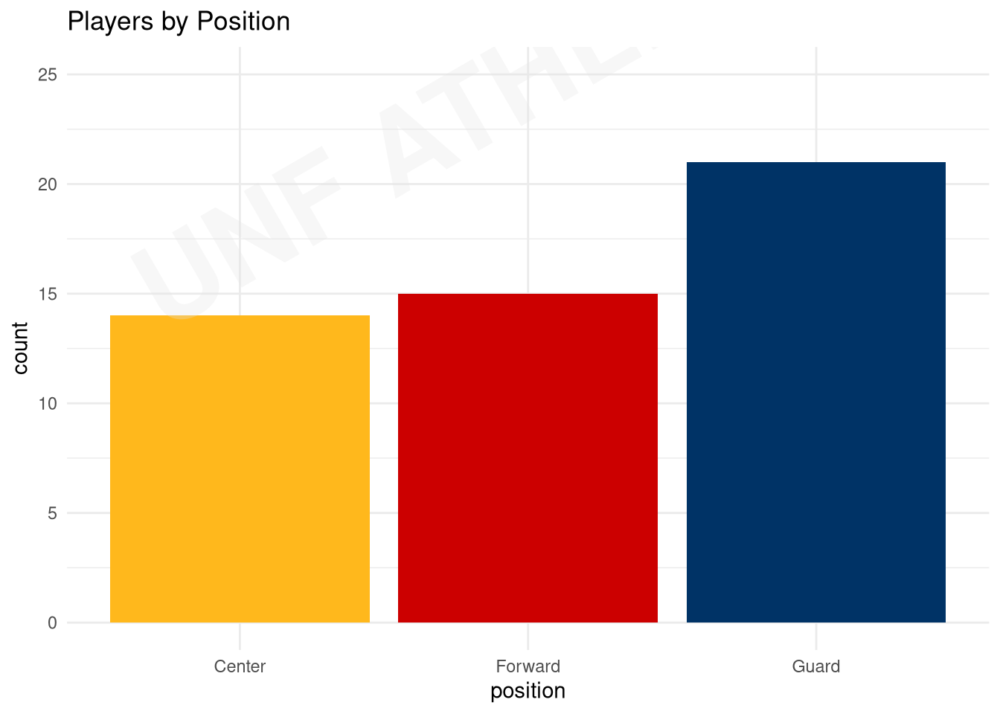
9.10.2 Watermark and Logos
# Add watermark text
ggplot(players, aes(x = position, fill = position)) +
geom_bar() +
annotate("text", x = 2, y = 25, label = "UNF ATHLETICS",
size = 20, color = "gray90", alpha = 0.3, angle = 30,
fontface = "bold") +
scale_fill_manual(values = c("Guard" = "#003366",
"Forward" = "#CC0000",
"Center" = "#FFB81C")) +
labs(title = "Players by Position") +
theme_minimal() +
theme(legend.position = "none")
9.11 Chapter Exercises
9.11.1 Exercise 1: Density Plot Comparison
Create overlapping density plots comparing salary distributions across positions.
# Your tasks:
# 1. Create density plot of salary_millions
# 2. Fill by position with transparency
# 3. Add vertical line at median salary
# 4. Use custom UNF colors
# 5. Add appropriate labelsClick to see solution
median_salary <- median(players$salary_millions)
ggplot(players, aes(x = salary_millions, fill = position)) +
geom_density(alpha = 0.5) +
geom_vline(xintercept = median_salary, linetype = "dashed",
color = "black", size = 1) +
annotate("text", x = median_salary + 1, y = 0.3,
label = paste("Median =", round(median_salary, 2)),
hjust = 0) +
scale_fill_manual(values = c("Guard" = "#003366",
"Forward" = "#CC0000",
"Center" = "#FFB81C")) +
labs(title = "Salary Distribution by Position",
x = "Salary ($ millions)",
y = "Density",
fill = "Position") +
theme_minimal() +
theme(legend.position = "top")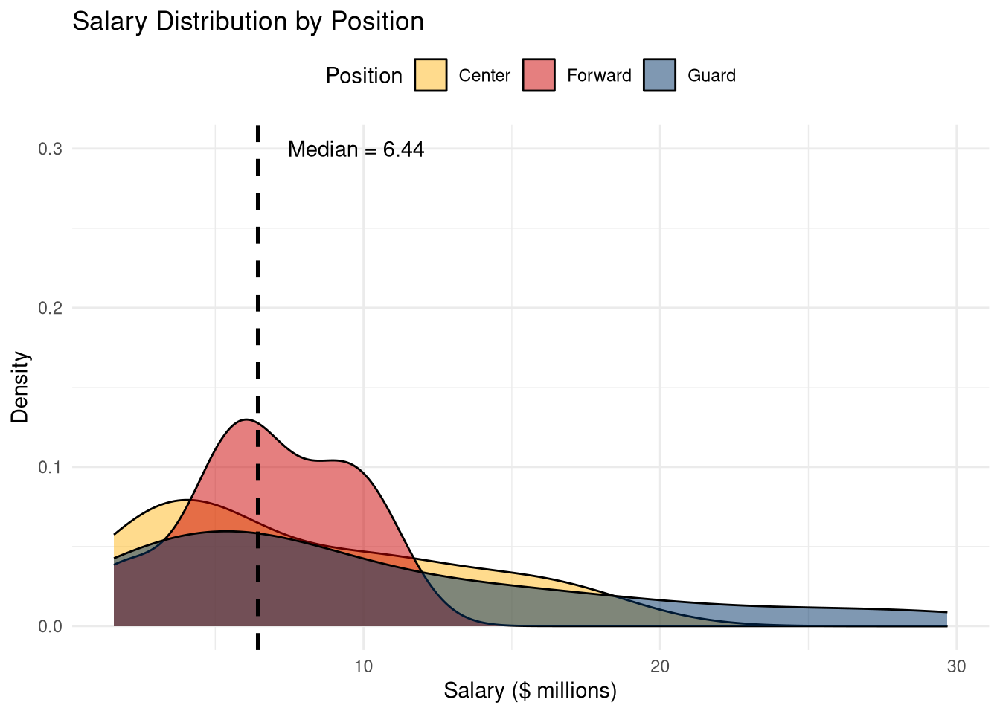
9.11.2 Exercise 2: Labeled Scatterplot
Create a scatterplot with intelligent labels for outliers.
# Your tasks:
# 1. Scatterplot of rebounds vs. assists
# 2. Color by position
# 3. Label players with >9 rebounds OR >7 assists using geom_text_repel
# 4. Add quadrant lines at means
# 5. Size points by minutes_per_gameClick to see solution
outlier_players <- players %>%
filter(rebounds_per_game > 9 | assists_per_game > 7)
avg_reb <- mean(players$rebounds_per_game)
avg_ast <- mean(players$assists_per_game)
ggplot(players, aes(x = rebounds_per_game, y = assists_per_game)) +
geom_vline(xintercept = avg_reb, linetype = "dashed", color = "gray50") +
geom_hline(yintercept = avg_ast, linetype = "dashed", color = "gray50") +
geom_point(aes(color = position, size = minutes_per_game), alpha = 0.6) +
geom_text_repel(
data = outlier_players,
aes(label = player),
size = 3,
fontface = "bold",
box.padding = 0.5
) +
scale_color_manual(values = c("Guard" = "#003366",
"Forward" = "#CC0000",
"Center" = "#FFB81C")) +
labs(title = "Rebounds vs. Assists with Outliers Labeled",
subtitle = "Dashed lines = league averages",
x = "Rebounds per Game",
y = "Assists per Game",
color = "Position",
size = "Minutes") +
theme_minimal()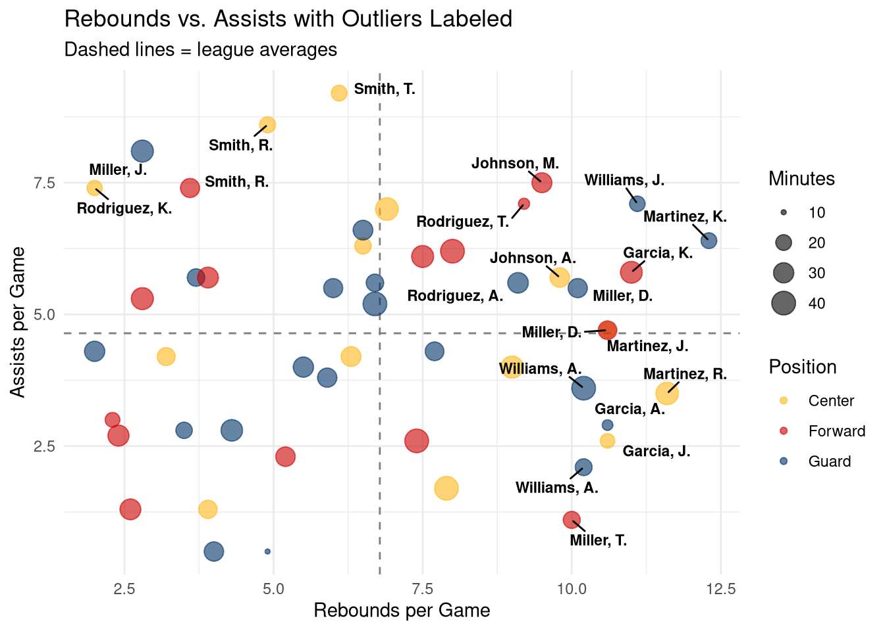
9.11.3 Exercise 3: Annotated Performance Zones
Create a plot with custom annotated regions.
# Your tasks:
# 1. Scatterplot of field_goal_pct vs. points_per_game
# 2. Add 3 colored rectangles for: Elite, Average, Below Average zones
# 3. Annotate each zone with text
# 4. Add points colored by position
# 5. Format x-axis as percentagesClick to see solution
ggplot(players, aes(x = field_goal_pct, y = points_per_game)) +
# Below Average zone
annotate("rect", xmin = 0.35, xmax = 0.42, ymin = 0, ymax = 15,
fill = "red", alpha = 0.1) +
annotate("text", x = 0.385, y = 13, label = "Below\nAverage",
color = "darkred", fontface = "bold") +
# Average zone
annotate("rect", xmin = 0.42, xmax = 0.48, ymin = 15, ymax = 22,
fill = "yellow", alpha = 0.1) +
annotate("text", x = 0.45, y = 20, label = "Average",
color = "orange", fontface = "bold") +
# Elite zone
annotate("rect", xmin = 0.48, xmax = 0.55, ymin = 22, ymax = 35,
fill = "green", alpha = 0.1) +
annotate("text", x = 0.515, y = 32, label = "Elite",
color = "darkgreen", fontface = "bold", size = 5) +
geom_point(aes(color = position), size = 3, alpha = 0.7) +
scale_x_continuous(labels = scales::percent) +
scale_color_manual(values = c("Guard" = "#003366",
"Forward" = "#CC0000",
"Center" = "#FFB81C")) +
labs(title = "Player Performance Zones",
x = "Field Goal Percentage",
y = "Points per Game",
color = "Position") +
theme_minimal()
9.11.4 Exercise 4: Correlation Heatmap
Create a custom correlation heatmap.
# Your tasks:
# 1. Calculate correlation matrix for all numeric player stats
# 2. Create heatmap using geom_tile
# 3. Add correlation values as text
# 4. Use blue-white-red color scale
# 5. Remove grid linesClick to see solution
# Calculate correlations
player_cor <- players %>%
dplyr::select(points_per_game, rebounds_per_game, assists_per_game,
minutes_per_game, field_goal_pct, salary_millions) %>%
cor()
# Melt
library(reshape2)
cor_melted <- melt(player_cor)
# Plot
ggplot(cor_melted, aes(x = Var1, y = Var2, fill = value)) +
geom_tile(color = "white", size = 1) +
geom_text(aes(label = round(value, 2)),
color = ifelse(abs(cor_melted$value) > 0.5, "white", "black"),
size = 4, fontface = "bold") +
scale_fill_gradient2(
low = "blue", mid = "white", high = "red",
midpoint = 0, limit = c(-1, 1),
name = "Correlation"
) +
labs(title = "Player Statistics Correlation Matrix",
x = "", y = "") +
theme_minimal() +
theme(
axis.text.x = element_text(angle = 45, hjust = 1, size = 11),
axis.text.y = element_text(size = 11),
panel.grid = element_blank()
)
9.11.5 Exercise 5: Multi-Panel Analysis
Create a 2x2 panel comparing different aspects of player performance.
# Your tasks:
# 1. Create 4 plots:
# a) Histogram of points_per_game
# b) Boxplot of salary by position
# c) Scatterplot of points vs. salary
# d) Density plot of field_goal_pct by position
# 2. Combine using patchwork in 2x2 layout
# 3. Add overall title and captionClick to see solution
library(patchwork)
# Plot A: Histogram
plot_a <- ggplot(players, aes(x = points_per_game)) +
geom_histogram(bins = 12, fill = "#003366", color = "white") +
labs(title = "A) Scoring Distribution",
x = "Points per Game", y = "Count") +
theme_minimal()
# Plot B: Boxplot
plot_b <- ggplot(players, aes(x = position, y = salary_millions, fill = position)) +
geom_boxplot() +
scale_fill_manual(values = c("Guard" = "#003366",
"Forward" = "#CC0000",
"Center" = "#FFB81C")) +
labs(title = "B) Salary by Position",
x = "Position", y = "Salary ($ millions)") +
theme_minimal() +
theme(legend.position = "none")
# Plot C: Scatterplot
plot_c <- ggplot(players, aes(x = points_per_game, y = salary_millions,
color = position)) +
geom_point(size = 3, alpha = 0.7) +
geom_smooth(method = "lm", se = FALSE, color = "black", linetype = "dashed") +
scale_color_manual(values = c("Guard" = "#003366",
"Forward" = "#CC0000",
"Center" = "#FFB81C")) +
labs(title = "C) Salary vs. Performance",
x = "Points per Game", y = "Salary ($ millions)") +
theme_minimal() +
theme(legend.position = "bottom")
# Plot D: Density
plot_d <- ggplot(players, aes(x = field_goal_pct, fill = position)) +
geom_density(alpha = 0.5) +
scale_fill_manual(values = c("Guard" = "#003366",
"Forward" = "#CC0000",
"Center" = "#FFB81C")) +
scale_x_continuous(labels = scales::percent) +
labs(title = "D) Shooting Efficiency",
x = "Field Goal %", y = "Density") +
theme_minimal() +
theme(legend.position = "none")
# Combine
combined_plot <- (plot_a | plot_b) / (plot_c | plot_d) +
plot_annotation(
title = "Comprehensive Player Performance Analysis",
subtitle = "Multi-dimensional view of league statistics",
caption = "Data from 2024-2025 Season",
theme = theme(
plot.title = element_text(size = 16, face = "bold"),
plot.subtitle = element_text(size = 12)
)
)
combined_plot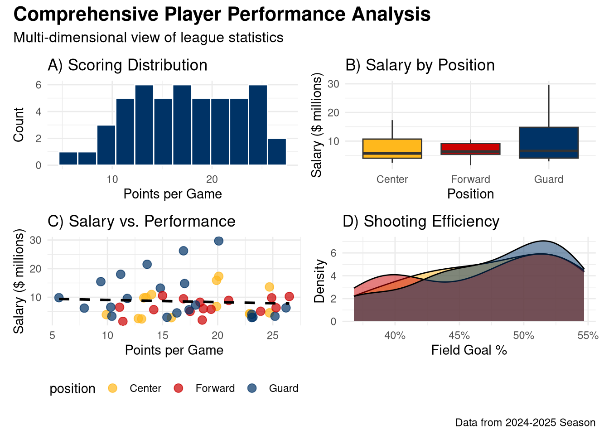
9.12 Chapter Summary
You’ve mastered advanced visualization techniques!
Key Takeaways:
- Density plots smooth distributions for elegant comparisons
- geom_text_repel() intelligently positions labels without overlap
- Annotations add context with shapes, text, arrows, and regions
- Heatmaps visualize matrices and correlations effectively
- 2D density and hexbins handle large datasets without overplotting
- Maps visualize geographic sport data
- patchwork combines multiple plots into professional layouts
- Custom palettes and themes create branded visualizations
Essential Functions:
| Function | Purpose |
|---|---|
geom_density() |
Smooth distribution curves |
geom_density_ridges() |
Stacked density plots |
geom_text_repel() |
Non-overlapping text labels |
annotate() |
Add shapes, text, arrows |
geom_tile() |
Heatmaps and matrices |
geom_density_2d() |
2D density contours |
geom_hex() |
Hexagonal binning |
plot_usmap() |
US state maps |
+ / | / / (patchwork) |
Combine plots |
Next Steps:
In Chapter 10, we’ll learn data storytelling - how to craft narratives, create visual hierarchies, and build compelling presentations with your visualizations!